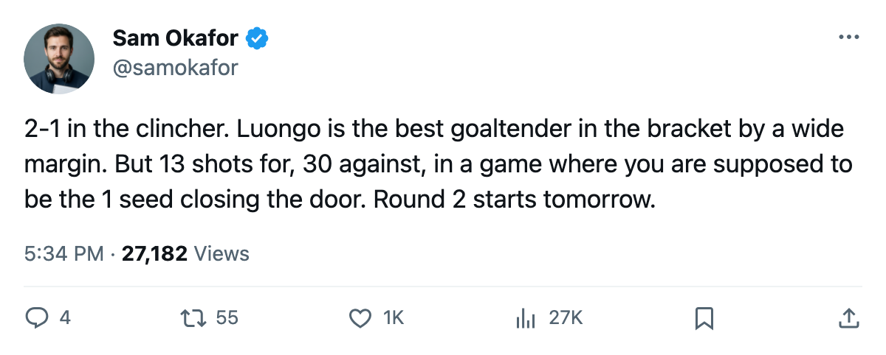

LEAFS 2, ISLANDERS 1, series 4-1: 30 shots against in the clincher, and Round 2 opens tomorrow
Toronto closes out New York on 2 goals and 13 shots, and faces a Pittsburgh club that just beat a better team in six
 Sam OkaforLeafs beat reporter · Queen City Telegram
Sam OkaforLeafs beat reporter · Queen City Telegram
 Toronto Maple Leafs closed the
Toronto Maple Leafs closed the  New York Islanders series 4-1 on a 2-1 home win. The shot column reads 13 for Toronto, 30 against.
New York Islanders series 4-1 on a 2-1 home win. The shot column reads 13 for Toronto, 30 against.
 Roberto Luongo94 stopped 29 of those 30. Across five playoff games he sits 4-1 with a 1.41 GAA and a .963 save percentage. He has been the best reason this series ended in five rather than six.
Roberto Luongo94 stopped 29 of those 30. Across five playoff games he sits 4-1 with a 1.41 GAA and a .963 save percentage. He has been the best reason this series ended in five rather than six.
The offense, though, produced 2 goals on 13 shots in the clincher.  Marian Gaborik98 leads all Toronto scorers this spring with 3+5=8 in 5 games.
Marian Gaborik98 leads all Toronto scorers this spring with 3+5=8 in 5 games.  Gary Roberts88 sits one behind at 1+6=7.
Gary Roberts88 sits one behind at 1+6=7.  Mats Sundin91 has 3+1=4.
Mats Sundin91 has 3+1=4.  Barret Jackman86 is the next man up, the highest-scoring defenseman with 2+1=3.
Barret Jackman86 is the next man up, the highest-scoring defenseman with 2+1=3.
 Pittsburgh Penguins eliminated
Pittsburgh Penguins eliminated  New Jersey Devils 4-2 on Thursday night. The Devils were a 114-point club, and Pittsburgh won five one-goal games and an overtime to close them out. The Penguins scored 3-2 on the road in Game 6 at the Continental Airlines Arena. They arrive tomorrow carrying a 24-34-11 record nobody outside their dressing room respected, plus the goaltending to prove that record wrong.
New Jersey Devils 4-2 on Thursday night. The Devils were a 114-point club, and Pittsburgh won five one-goal games and an overtime to close them out. The Penguins scored 3-2 on the road in Game 6 at the Continental Airlines Arena. They arrive tomorrow carrying a 24-34-11 record nobody outside their dressing room respected, plus the goaltending to prove that record wrong.
The regular season told a different story
Toronto Maple Leafs went 4-0-0 against Pittsburgh Penguins this year, outscoring them 20-9. Two of those four games were decided by a single goal.
| Stat | TOR | PIT |
|---|---|---|
| Regular season points | 133 | 85 |
| Playoff series result | 4-1 NYI | 4-2 NJ |
| Playoff GAA (starting goalie) | Luongo 1.41 | Hedberg 2.00 |
| Playoff save percentage | Luongo .963 | Hedberg .907 |
| Top scorer (points in games) | Gaborik 8 in 5 | Lemieux 8 in 6 |
 Mario Lemieux88 leads Pittsburgh Penguins with 2+6=8 in 6 playoff games. Eric Meloche77 has 4+2=6. Their goaltending has split work:
Mario Lemieux88 leads Pittsburgh Penguins with 2+6=8 in 6 playoff games. Eric Meloche77 has 4+2=6. Their goaltending has split work:  Johan Hedberg87 is 3-2 with a 2.00 GAA and .907, and Sebastien Caron79 entered in Game 1 and went 1-0 with a 1.00 and a .952. Pittsburgh Penguins has played its backup more than once in this bracket.
Johan Hedberg87 is 3-2 with a 2.00 GAA and .907, and Sebastien Caron79 entered in Game 1 and went 1-0 with a 1.00 and a .952. Pittsburgh Penguins has played its backup more than once in this bracket.
The first two games are at the Air Canada Centre, April 22 and April 24. The Penguins are missing  Guillaume Lefebvre75 (foot, back 2005-05-15) and
Guillaume Lefebvre75 (foot, back 2005-05-15) and  Kris Beech70 (elbow, back 2005-05-19), which forced Rico Fata73 to center at the position Beech occupied during the regular season.
Kris Beech70 (elbow, back 2005-05-19), which forced Rico Fata73 to center at the position Beech occupied during the regular season.
Game 1 is tomorrow at 7:00.
